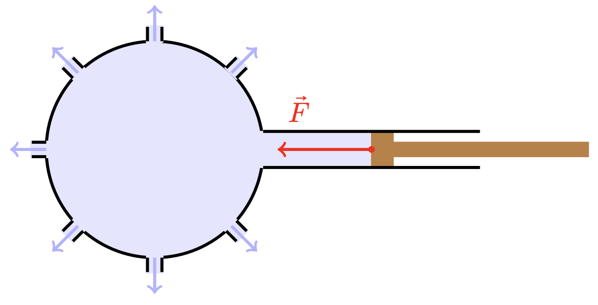
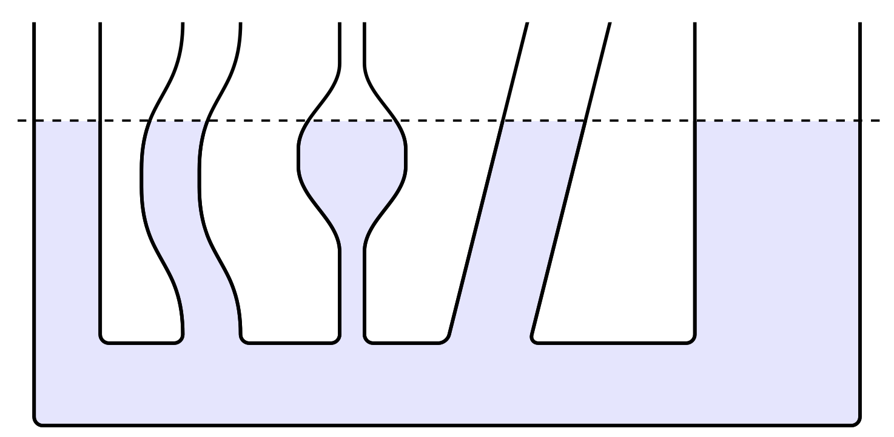

Druck
Entstehung des Drucks in Gasen
Bei eingeschlossenen Gasen entsteht der Druck durch unregelmäßige Stöße
der Teilchen auf die Gefäßwände. Die Stöße sehr vieler Teilchen wirken
wie eine gleich bleibende Kraft.
In einem Gefäß ist der Gasdruck an allen Stellen gleich groß. An den
Wänden entstehen so nach außen, senkrecht zur Begrenzungsfläche,
gerichtete Druckkräfte.
Entstehung des Drucks in Flüssigkeiten
Bei Versuchen lässt sich herausfinden, dass der Druck in Flüssigkeiten in alle Richtungen gleichzeitig wirkt. Man entdeckte das: Pascal'sches Prinzip.
Unten gezeichnet ist ein Versuch mit einem mit Löchern versehenen Glaskolben.
Pascal'sches Prinzip
In einer abgeschlossenen Flüssigkeit ist der Druck an allen Stellen und in alle Richtungen gleich groß.
Bemerkung
Das Pascal'sche Prinzip gilt nur, wenn man die Gewichtskraft der Flüssigkeit nicht berücksichtigt.
Druck, Auflagedruck
Definition
Der Druck $p$ ist der Quotient aus dem Betrag $F$ der senkrecht auf eine Fläche wirkenden Kraft und dem Flächeninhalt $A$ der Fläche.
Formel
$$ p = \frac{F}{A}$$Einheit
$$[p] = \frac{[N]}{[m^2]} $$oder
$$[p] = [Pa] $$ $$Pa,\ Pascal$$Manometer
Zum Messen des Drucks benutzt man einen: Manometer.
Schweredruck, hydrostatischer Druck
Der Druck, der in einer bestimmten Tiefe in einer Flüssigkeit herrscht, bezeichnet man als hydrostatischen Druck oder Schweredruck.
Herleitung
Man kann eine Formel herleiten, die es erlaubt, den Schweredruck in
einer beliebigen Flüssigkeit und in einer bestimmten Tiefe zu berechnen.
Der Druck $p$ in der Tiefe $h$ entsteht durch die Gewichtskraft $F_G$
der oberen Flüssigkeitssäule auf die Trennfläche $A$ zur unteren
Flüssigkeitssäule.
Sei $m$ die Masse der Flüssigkeit über der Trennfläche $A$.
Für den Druck gilt:
$$ p = \frac{F}{A}$$ $$ = \frac{m \cdot g}{A}$$ $$ = \frac{ \rho \cdot V \cdot g}{A}$$ $$ = \frac{ \rho \cdot A \cdot h \cdot g}{A}$$ $$ = \rho \cdot g \cdot h $$Formel
$$ p = \rho \cdot g \cdot h $$Kommunizierende oder verbundene Gebiete
Definition
Als kommunizierende oder verbundene Gefäße bezeichnet man nach oben offene Gefäße beliebiger Form, die miteinander verbunden sind.
In kommunizierende oder verbundene Gefäße stehen gleiche Flüssigkeiten gleich hoch.